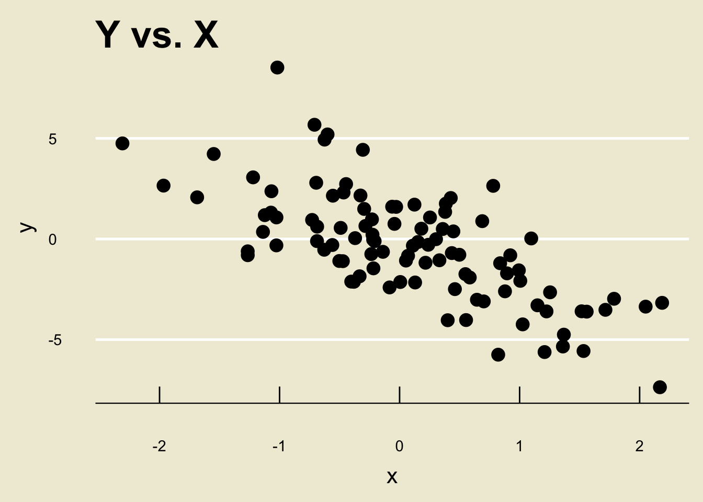

bill_length_mm bill_depth_mm
1 46.1 13.2
2 50 16.3
3 48.7 14.1
4 50 15.2
5 47.6 14.5
6 46.5 13.5
7 45.4 14.6
8 46.7 15.3
9 43.3 13.4
10 46.8 15.4
# ℹ 114 more rowsPSTAT 5A: Lecture 02
Descriptive Statistics, Part II
Where We Left Off
Last Time
Last time we started discussing how to produce and interpret visual summaries for datasets consisting of only one variable.
- We learned that histograms and boxplots are good visualizers for numerical variables and barplots are good visualizers for categorical data.
But, as we also saw (in the
palmerpenguinsdataset), data is usually comprised of several variables.A natural question therefore arises: how might we visualize the relationship between multiple variables?
Multiple Variables
Perhaps unsurprisingly, visualizing the relationship between 3 or more variables can be a bit tricky.
As such, we will restrict ourselves to comparing only two variables.
Even if we compare only two variables, three cases arise:
- Comparing two numerical variables
- Comparing one numerical and one categorical variable
- Comparing two categorical variables
We will examine the first two cases above, and save the third for later.
Two Numerical Variables
Let’s say we have two variables, and we want to visualize their relationship.
As an example, let’s return to the
palmerpenguinsdataset and compare thebill_length_mmandbill_depth_mmvariables. Let’s also restrict ourselves to Gentoo penguins.
- Notice that each observational unit of this data matrix (consisting only of the
bill_length_mmandbill_depth_mmvariables) is a pair of numbers.
- It is fairly natural, then, to imagine plotting these pair of numbers on a Cartesian coordinate system.
library(tidyverse)
penguins %>% filter(species == "Gentoo") %>%
ggplot(aes(x = bill_length_mm, y = bill_depth_mm)) +
geom_point(size = 3) +
theme_economist(base_size = 24) +
ggtitle("Bill Depth vs. Length in Gentoo Penguins") +
theme(panel.background = element_rect("#f0ebd8"),
plot.background = element_rect(fill = "#f0ebd8"),
axis.title.y = element_text(size = 16,
margin = margin(
t = 0,
r = 10,
b = 0,
l = 0)),
axis.title.x = element_text(size = 16,
margin = margin(
t = 10,
r = 0,
b = 0,
l = 0)),
title = element_text(size = 18)
)Warning: Removed 1 row containing missing values or values outside the scale range
(`geom_point()`).
Scatterplot
This type of visualization is called a scatterplot.
Specifically, when comparing two numerical variables of the same length, we generate a scatterplot by plotting each observational unit on a Cartesian coordinate system where the axes are prescribed by the variables in question.
Result
When comparing two numerical variables (of the same length), a scatterplot is the best visulization tool.
Interpreting Scatterplots
- Let’s return to the scatterplot we generated before:
library(tidyverse)
gentoo %>%
ggplot(aes(x = bill_length_mm, y = bill_depth_mm)) +
geom_point(size = 3) +
theme_economist(base_size = 24) +
ggtitle("Bill Depth vs. Length in Gentoo Penguins") +
theme(panel.background = element_rect("#f0ebd8"),
plot.background = element_rect(fill = "#f0ebd8"),
axis.title.y = element_text(size = 16,
margin = margin(
t = 0,
r = 10,
b = 0,
l = 0)),
axis.title.x = element_text(size = 16,
margin = margin(
t = 10,
r = 0,
b = 0,
l = 0)),
title = element_text(size = 18)
)Warning: Removed 1 row containing missing values or values outside the scale range
(`geom_point()`).Notice how as the values of
bill_length_mmincrease, the corresponding values ofbill_depth_mmalso increase on average?- This makes intutive sense: longer bills are probably deeper!
Trend
This is an example of what we call a trend; specifically, a positive linear trend.
A trend is, loosely speaking, any relationship we observe between the two variables in a scatterplot.
A trend is said to be linear if a one-unit change in one variable corresponds to a fixed amount of change in the other (we’ll talk about nonlinear trends in a bit)
A trend is said to be positive (or increasing) if a one-unit increase in one variable corresponds to a one-unit increase in the other.
- Linear Negative Trend:
set.seed(123)
x <- rnorm(100)
y <- -2 * x + rnorm(100, 0, 2)
data.frame(x, y) %>%
ggplot(aes(x = x, y = y)) +
geom_point(size = 4) +
theme_economist(base_size = 24) +
ggtitle("Y vs. X") +
theme(panel.background = element_rect("#f0ebd8"),
plot.background = element_rect(fill = "#f0ebd8"),
axis.title.y = element_text(size = 16,
margin = margin(
t = 0,
r = 10,
b = 0,
l = 0)),
axis.title.x = element_text(size = 16,
margin = margin(
t = 10,
r = 0,
b = 0,
l = 0)),
title = element_text(size = 18)
)
- Nonlinear Negative Trend:
set.seed(123)
x <- rchisq(100, 20)
y <- (1 / x^2) + rnorm(100, 0, 0.0005)
data.frame(x, y) %>%
ggplot(aes(x = x, y = y)) +
geom_point(size = 4) +
theme_economist(base_size = 24) +
ggtitle("Y vs. X") +
theme(panel.background = element_rect("#f0ebd8"),
plot.background = element_rect(fill = "#f0ebd8"),
axis.title.y = element_text(size = 16,
margin = margin(
t = 0,
r = 10,
b = 0,
l = 0)),
axis.title.x = element_text(size = 16,
margin = margin(
t = 10,
r = 0,
b = 0,
l = 0)),
title = element_text(size = 18)
)
- Nonlinear Positive Trend:
set.seed(123)
x <- rchisq(100, 20)
y <- 1 - (1/x^2) + rnorm(100, 0, 0.0007)
data.frame(x, y) %>%
ggplot(aes(x = x, y = y)) +
geom_point(size = 4) +
theme_economist(base_size = 24) +
ggtitle("Y vs. X") +
theme(panel.background = element_rect("#f0ebd8"),
plot.background = element_rect(fill = "#f0ebd8"),
axis.title.y = element_text(size = 16,
margin = margin(
t = 0,
r = 10,
b = 0,
l = 0)),
axis.title.x = element_text(size = 16,
margin = margin(
t = 10,
r = 0,
b = 0,
l = 0)),
title = element_text(size = 18)
)
- No Discernable Trend
set.seed(123)
x <- rchisq(100, 20)
y <- rchisq(100, 20)
data.frame(x, y) %>%
ggplot(aes(x = x, y = y)) +
geom_point(size = 4) +
theme_economist(base_size = 24) +
ggtitle("Y vs. X") +
theme(panel.background = element_rect("#f0ebd8"),
plot.background = element_rect(fill = "#f0ebd8"),
axis.title.y = element_text(size = 16,
margin = margin(
t = 0,
r = 10,
b = 0,
l = 0)),
axis.title.x = element_text(size = 16,
margin = margin(
t = 10,
r = 0,
b = 0,
l = 0)),
title = element_text(size = 18)
)Nonlinear Trends
So, what concretely makes a trend nonlinear?
Well, let’s first quickly talk about what makes a function nonlinear.
Consider two functions, \(f\) and \(g\), whose graphs are depicted below:
f <- function(x){return(-1.5*x)}
p1 <- data.frame(x = seq(0, 4, by = 0.1)) %>%
ggplot(aes(x = x)) +
stat_function(fun = f, col = "blue", linewidth = 1) +
theme_economist(base_size = 24) +
ggtitle("f(x)") +
theme(panel.background = element_rect("#f0ebd8"),
plot.background = element_rect(fill = "#f0ebd8"),
axis.title.y = element_text(size = 16,
margin = margin(
t = 0,
r = 10,
b = 0,
l = 0)),
axis.title.x = element_text(size = 16,
margin = margin(
t = 10,
r = 0,
b = 0,
l = 0)),
title = element_text(size = 12)
)
g <- function(x){return(0.1/((x + 0.5)^0.25))}
p2 <- data.frame(x = seq(0, 4, by = 0.1)) %>%
ggplot(aes(x = x)) +
stat_function(fun = g, col = "blue", linewidth = 1) +
theme_economist(base_size = 24) +
ggtitle("g(x)") +
theme(panel.background = element_rect("#f0ebd8"),
plot.background = element_rect(fill = "#f0ebd8"),
axis.title.y = element_text(size = 16,
margin = margin(
t = 0,
r = 10,
b = 0,
l = 0)),
axis.title.x = element_text(size = 16,
margin = margin(
t = 10,
r = 0,
b = 0,
l = 0)),
title = element_text(size = 12)
)
grid.arrange(p1, p2, ncol = 2)Linearity
The key to determining linearity is to check the rate of change.
For a linear function: a one-unit change in
xcorresponds to the same amount of change iny, regardless of where the change inxoccurs.- I.e. as
xincreases from 0 to 1,yshould increase/decrease by the same amount as ifxhad increased from, say,2to3.
- I.e. as
Linearity
- For the function
fabove, this is the case:
p1x: \(0 \to 1\) |
y: \(0 \to -1.5\) |
\(\Delta\)y: \((-1.5 - 0) = -1.5\) |
x: \(2 \to 3\) |
y: \(-3 \to -4.5\) |
\(\Delta\)y: \((-4.5 + 3.5) = -1.5\) |
Linearity
- For the function
gabove, this is not the case:
p2x: \(0 \to 1\) |
y: \(0.12 \to 0.09\) |
\(\Delta\)y: \((0.09 - 0.12) = -0.03\) |
x: \(2 \to 3\) |
y: \(0.08 \to 0.073\) |
\(\Delta\)y: \((0.073 - 0.08) = -0.007\) |
Linearity
The notion of in the context of trends is pretty much the same: if a one-unit change in
xcorresponds to the same amount of change inyeverywhere, then we say that the trend is linear. Otherwise, we say the trend is nonlinear.By the way- another way to talk about trends is to phrase things in terms of the variables being compared.
For example, if the scatterplot of two variables displays a positive linear trend, we might say that the two variables have a positive linear association.
As a concrete example: bill length and bill depth appear to have a positive linear association, as seen in the scatterplot from a few slides ago.
- The trends/associations illustrated a few slides ago are probably a little unrealistically clear- most data is “messy”, and it can sometimes be difficult to determine whether or not there is a trend (let alone whether it is linear/nonlinear and positive/negative).
We will revisit the notion of trend in the last week of the course, when we talk about something called regression.
Regression will provide us with a tool for statistically testing for the presence of a trend.
So, stay tuned!
A Numerical and a Categorical Variable
The final case we will consider today is comparing a numerical variable to a categorical one.
As a concrete example, here is a (mock) dataset comprised of the following variables:
| Variable Name | Description |
|---|---|
stdy_hrs |
average amount of time (in hrs) a student spent studying for a particular class each week |
ltr_grd |
the final letter grade (A+, A, A-, etc.) the student received in the class |
dat <- read.csv("grade_data.csv", header = T)
dat ltr_grd stdy_hrs
1 A 17.758097
2 A 19.079290
3 A 26.234833
4 A 20.282034
5 A 20.517151
6 A 26.860260
7 A 21.843665
8 A 14.939755
9 A 17.252589
10 A 18.217352
11 A 24.896327
12 A 21.439255
13 A 21.603086
14 A 20.442731
15 A 17.776635
16 A 27.147653
17 A 21.991402
18 A 12.133531
19 A 22.805424
20 A 18.108834
21 B 11.728705
22 B 15.128100
23 B 11.895982
24 B 13.084435
25 B 13.499843
26 B 9.253227
27 B 19.351148
28 B 16.613492
29 B 11.447452
30 B 21.015260
31 B 17.705857
32 B 14.819714
33 B 19.580503
34 B 19.512534
35 B 19.286324
36 B 18.754561
37 B 18.215671
38 B 15.752353
39 B 14.776149
40 B 14.478116
41 C 15.873819
42 C 18.064372
43 C 13.305716
44 C 28.760302
45 C 24.435829
46 C 13.946011
47 C 17.187018
48 C 16.900051
49 C 22.509843
50 C 18.624839
51 C 20.139933
52 C 18.871540
53 C 18.807083
54 C 25.158710
55 C 17.984031
56 C 25.824118
57 C 12.030612
58 C 21.630762
59 C 19.557344
60 C 19.971737
61 C 20.708378
62 C 16.739544
63 C 17.500567
64 C 14.416411
65 C 14.176939
66 C 20.365879
67 C 21.016944
68 C 19.238519
69 C 23.150204
70 C 28.225381
71 D 12.526907
72 D 7.072493
73 D 17.017216
74 D 11.872398
75 D 11.935974
76 D 17.076714
77 D 13.145681
78 D 10.337847
79 D 14.543910
80 D 13.583326
81 D 14.017293
82 D 15.155841
83 D 12.888020
84 D 15.933130
85 D 13.338540
86 F 5.327128
87 F 8.387356
88 F 5.740726
89 F 2.696274
90 F 8.595230Note that
ltr_grdis categorical (in fact, it is ordinal) andstdy_hrsis numerical (specifically, continuous).Now, even though the observational units of our data matrix are pairs of quantities, they are no longer pairs of numbers and it therefore no longer makes sense to plot them as points on a Cartesian coordinate system.
- The way we get around this is, perhaps surprisingly… boxplots!
dat %>%
ggplot(aes(x = ltr_grd, y = stdy_hrs)) +
stat_boxplot(geom = "errorbar",
width = 0.25,
linewidth = 1) +
geom_boxplot(fill = "#7f9ab5",
size = 1,
outlier.size = 4) +
theme_economist(base_size = 18) +
ggtitle("Weekly Study Hrs vs. Letter Grade") +
theme(panel.background = element_rect("#f0ebd8"),
plot.background = element_rect(fill = "#f0ebd8"),
axis.title.y = element_text(size = 16,
margin = margin(
t = 0,
r = 10,
b = 0,
l = 0)),
axis.title.x = element_text(size = 16,
margin = margin(
t = 10,
r = 0,
b = 0,
l = 0)),
title = element_text(size = 18,
margin = margin(
t = 0,
r = 0,
b = 10,
l = 0))
) - This type of plot is called a side-by-side boxplot
Side-by-Side Boxplots
Result
When comparing one numerical and one categorical variable, it is best to visualize their relationship using a side-by-side boxplot.
Though the notion of trend is slightly different in the context of a side-by-side boxplot, we can still use them to determine relationships.
For example, from the plot on the previous slide, we can see that, on average, students who received lower grades tended to study less than those students who received higher grades.
Causality
I should make a very important point: identifying trends is not the same thing as identifying causal relationships.
For example, the side-by-side boxplot from a few slides ago does not tell us that “studying less causes your grade to decrease”
- There are a lot of other confounding variables that could contribute to the decrease in grade.
We won’t talk too much about causality in this course, but it is an important thing to be aware of: association is not the same thing as causation!
Data, Revisited
Quantifying Data
Let’s once again consider a single numerical variable.
As a concrete example, we can consider the exam scores variable from the previous slides:
[1] 88.236 77.348 81.050 74.431 75.083 79.569 74.998 80.099 74.264 83.850
[11] 89.857 81.427 79.439 84.260 78.565 77.570 78.224 73.780 88.085 79.341
[21] 80.554 77.317 81.155 83.842 87.051 78.362 81.528 72.148 74.131 78.927
[31] 75.446 79.791 78.199 90.769 85.640 78.420 83.484 79.045 97.909 86.736
[41] 73.723 76.973 81.320 79.238 85.803 86.621 85.781 81.844 82.896 80.478
[51] 75.903 84.565 76.302 83.432 85.448 69.695 81.049 85.575 84.791 82.525
[61] 78.361 77.803 86.542 84.171 86.103 72.772 78.730 76.189 75.187 79.194
[71] 77.159 82.048 82.661 84.021 76.008 79.474 79.015 86.992 72.524 76.094
[81] 78.765 80.623 82.497 75.776 70.614 79.677 81.182 77.943 76.863 85.561
[91] 89.569 96.695 73.680 77.770 81.584 81.965 78.373 76.295 73.212 79.229
[101] 87.273 87.364 82.706 83.843 75.864 82.791 82.637 78.685 72.626 69.302
[111] 93.408 73.189 83.764 77.832 82.803 80.278 94.962 79.616 85.667 82.710
[121] 86.823 76.656 74.623 71.508 91.131 78.318 81.058 86.239 76.585 85.652
[131] 77.122 86.036 83.127 83.234 80.746 83.878 75.544 73.780 81.106 85.523- Note that this is really just a list of numbers!
Indeed, any numerical variable (or, equivalently, any dataset consisting of just a single numerical variable) will just be a list (or set) of numbers \[ X = \{x_1, x_2, \cdots, x_n\} \] where I have adopted the standard mathematical convention of denoting the elements of a set between curly braces.
We can use the following notational shorthand: \[ X = \{x_i\}_{i=1}^{n} \] where:
- \(n\) denotes the total number of elements in the dataset
- \(x_i\) denotes the \(i\)th observation
- For example, in the context of the scores dataset, \(x_1\) denotes the score of the first student (88.236%), \(x_4\) denotes the score of the fourth student (74.431%), and \(x_i\) denotes the score of the \(i\)th student for an arbitrary index \(i\)
We can further borrow the notation of set theory to talk about data aggregation: given a set of data \(X = \{x_i\}_{i=1}^{n}\) and another set of data \(Y = \{y_i\}_{i=1}^{m}\), we can denote the aggregated set \(Z\), consisting of the elements \(x_1, \cdots, x_n, y_1, \cdots, y_m\), by \[ Z = X \cup Y \]
For example, \(\{1, 2, 3\} \cup \{4, 5\} = \{1, 2, 3, 4, 5\}\).
Mathematically, we call this the union of two sets.
Summarizing Data
The remainder of today’s lecture will be devoted to finding numerical summaries of a dataset \(X = \{x_i\}_{i=1}^{n}\).
This will lead us to several different summary statistics, which are mathematical quantities that seek to describe different aspects of our data.
Measures of Central Tendency
Quantifying “Center”
Here is a very broad question: what is the center of a dataset \(X = \{x_i\}_{i=1}^{n}\)?
Perhaps the scores dataset from earlier is a bit too complicated- let’s simplify things and look at the dataset \[ X = \{1, 1, 1, 2, 3, 3, 4, 5, 5, 5, 6, 6\} \]
As a starting point, I can “plot” these points on a number line (to produce what is known as a dotplot):

Quantifying “Center”
- Back to our question: what is the center of this dataset?
- Perhaps we can think of center as a balancing point. In other words: where should I place a fulcrum to ensure this number line remains balanced?

- We call this balancing point the arithmetic mean (or just mean, or average, for short), and denote it \(\overline{x}\).
- This notion of a “balancing point” applies to any set of numbers! For example, the dotplot of the exam scores dataset from before looks like:

The Mean
Formula: The Mean
Given a set of data \(x = \{x_i\}_{i=1}^{n}\), we compute its mean, denoted \(\overline{x}\), using the formula \[ \overline{x} = \frac{1}{n} (x_1 + \cdots + x_n) \] which can be equivalently written as \[ \overline{x} = \frac{1}{n} \sum_{i=1}^{n} x_i \]
- In words: we compute the mean by adding up all of the points included in our dataset, and dividing by the total number of points.
A Note on Notation
Perhaps you haven’t seen the notation \(\sum_{i=1}^{n} x_i\) before. Don’t get scared by it! It’s just a shorthand notation for the sum of the points \(\{x_1, x_2, \cdots, x_n\}\).
So, if it’s easier for you, you can always think of \((x_1 + \cdots x_n)\) in place of \(\sum_{i=1}^{n} x_i\).
Having said that, I will often use this notation (called sigma notation, as the symbol \(\sum\) is the capital Greek letter “sigma”) as it saves quite a bit of time in the long run.
- I also urge you to familiarze yourself with \(\Sigma\) notation, as I’m sure you will encounter it even beyond this course!
Time for an Exercise!
Exercise 1
Compute the mean of the set \(B = \{-1, 0, 1, 1, 2, 4\}\). Discuss with your neighbors!
Another One!
Exercise 2
A collection of \(n = 42\) exam scores have an average 50%. Two additional scores of 100% are reported. How does the average of scores change with the addition of these two new scores?
Measures of Spread
Range
Another way we can summarize a dataset \(X = \{x_i\}_{i=1}^{n}\) is to describe how spread out it is.
One idea on how we can capture the spread is to say: how far apart is the smallest value from the largest value?
Indeed, this statistic has a name: the range.
Formula: Range
Given a set of numbers \(X = \{x_1, x_2, \cdots, x_n\}\), we compute the range of \(X\) as: \[ \mathrm{range}(X) = \max\{x_1, \cdots, x_n\} - \min\{x_1, \ \cdots, \ x_n\} \] i.e. the largest value minus the smallest value.
Leadup
Now, there is another way to think about spread: suppose we look at the average distance of points from their mean.
More specifically: define \(d_i := x_i - \overline{x}\) to be the deviation of the \(i\)th point from the mean:

- The distance between \(x_i\) and \(\overline{x}\) is thus the squared deviance \(d_i^2\).
Therefore, the average distance of each point from the mean would be \[ \frac{1}{n} \sum_{i=1}^{n} d_i^2 = \frac{1}{n} \sum_{i=1}^{n} (x_i - \overline{x})^2 \]
For reasons that are slightly beyond the scope of this course, we will actually divide by \(n - 1\) as opposed to \(n\). (It turns out that this yields a measure that has some slightly nicer properties than the one containing \(1/n\) in place of \(1/(n - 1)\)): \[ \frac{1}{n - 1} \sum_{i=1}^{n} (x_i - \overline{x})^2 \]
The Variance
- This is what we call the variance of the set \(X\), denoted by \(s_x^2\).
Formula: Variance, and Standard Deviation
Given a set of data \(X = \{x_i\}_{i=1}^{n}\), we compute the variance of \(X\) by \[ s_x^2 = \frac{1}{n - 1} \sum_{i=1}^{n} (x_i - \overline{x})^2 \] We define the standard deviation, denoted by \(s_x\), to be \(\sqrt{s_X^2}\); i.e. \[ s_x := \sqrt{\frac{1}{n - 1} \sum_{i=1}^{n} (x_i - \overline{x})^2} \]
Time for an Exercise!
Exercise 3
For the set \(X = \{1, 2, 3, 4, 5\}\), compute \(s_x\). Discuss with your neighbor!
IQR
- There is yet another way to quantify the spread of a dataset, and that is what is known as the Interquartile Range (IQR, for short).
Formula: The IQR
Given a set of data \(x = \{x_i\}_{i=1}^{n}\), we compute its interquartile range using the formula \[ \mathrm{IQR} = Q_3 - Q_1 \] where \(Q_1\) and \(Q_3\) denote the first and third quartiles, respectively.
- In other words, the IQR is just the width of the box in a boxplot!
Five Number Summary
Speaking of boxplots, there is a set of numbers that occurs frequently when summarizing numerical data, collectively called the five number summary. The elements of the five number summary are:
- The minimum
- The first quartile
- The median
- The third quartile
- The maximum
Time for an Exercise!
Exercise 4
Consider a dataset \(X\) that has boxplot given by:
set.seed(123)
x <- rnorm(100, 6)
data.frame(x) %>%
ggplot(aes(x = x)) +
stat_boxplot(geom = "errorbar",
width = 0.25,
linewidth = 1) +
geom_boxplot(fill = "#7f9ab5",
size = 1,
outlier.size = 4) +
theme_economist(base_size = 18) +
theme(panel.background = element_rect("#f0ebd8"),
plot.background = element_rect(fill = "#f0ebd8"),
axis.title.y = element_text(size = 16,
margin = margin(
t = 0,
r = 10,
b = 0,
l = 0)),
axis.title.x = element_text(size = 16),
axis.text.y = element_blank()
) +
ylim(c(-0.75, 0.75)) +
ggtitle("Boxplot of X")Provide the five number summary, along with the IQR. Discuss with your Neighbors!
Transforming Data
Leadup
Suppose \(F = \{f_i\}_{i=1}^{n}\) denotes a set of temperature measurements, as recorded in Fahrenheit.
Now, let’s say I want to convert the measurements to be in terms of Centigrade, and will store the resulting values in a set called \(C = \{c_i\}_{i=1}^{n}\) (for “Centigrade”).
The \(c_i\) values aren’t new data- they are still linked with our original \(f_i\) Fahrenheit measurements! Specifically, they are linked by way of the following formula: \[ c_i = \frac{5}{9} (f_i - 32) \] (as this is the conversion from Fahrenheit to Centigrade).
Transformations
- This is a specific example of a more general concept known as data transformation.
In general, given a set of data \(X = \{x_i\}_{i=1}^{n}\), we can consider the set of points obtained by applying some function (a.k.a. a transformation) \(g\) to the points \(x_i\), to obtain a new set \(\{g(x_i)\}_{i=1}^{n}\)
For instance, we used \(g(x) = (5/9) \cdot (x - 32)\) in our Fahrenheit-to-Centigrade example on the previous slide.
There are many other functions we could consider! For instance, in certain cases we may need to transform our data using a logarithm function; i.e. \(g(x) = \ln(x)\).
Linear Transformations
For now, let’s restrict ourselves to considering linear transformations of our data.
Recall that a function \(g(x)\) is said to be linear if it is of the form \(g(x) = ax + b\).
- So, we are restricting ourselves to functions \(g\) of this form.
One question we may ask is: what is the mean of our transformed data?
- In other words, given a set \(X = \{x_i\}_{i=1}^{n}\) and a new set \(Y := \{ax_i + b\}_{i=1}^{n}\) for fixed constants \(a\) and \(b\), what can we say about \(\overline{Y}\)?
- Well, let’s use the definition of the mean!
Definitionally, \(\overline{y} = \frac{1}{n} \sum_{i=1}^{n} y_i\).
But, we know that \(y_i = a x_i + b\); i.e. \[\begin{align*} \overline{y} & = \frac{1}{n} \sum_{i=1}^{n} (a x_i + b) \\ & = \frac{1}{n} \left[ (ax_1 + b) + (ax_2 + b) + \cdots + (ax_n + b) \right] \end{align*}\]
- Grouping like terms yields:
\[\begin{align*} \overline{y} & = \frac{1}{n} \left[ (ax_1 + b) + (ax_2 + b) + \cdots + (ax_n + b) \right] \\ & = \frac{1}{n} \left[ (ax_1 + ax_2 + \cdots + ax_n) + (\underbrace{b + \cdots + b}_{\text{$n$ times}}) \right] \\ & = \frac{1}{n} \left[ a (x_1 + \cdots + x_n) + n \cdot b \right] \\ & = a \cdot \left[ \frac{1}{n} (x_1 + \cdots + x_n) \right] + \frac{1}{n} (n \cdot b) = \boxed{a \overline{x} + b} \end{align*}\]
- So, if I take a set of data, multiply every element by some fixed constant \(a\), and then add some other fixed constant \(b\) to all of the data points, the mean of the resulting points will be equal to \(a\) times the mean of the original data points plus \(b\).
Exercise 5
Suppose \(12\) measurements of the temperature in Gauchoville have an average of 68oF. What is the corresponding average temperature in oC? Discuss with your neighbors!
More Complicated Transformations
For more general transformations \(g\), things don’t work out as nicely.
For instance, if we take the logarithm of each datapoint, the average of these new points is not necessarily going to be the logarithm of the average.
- To see that, we can consider a specific example: Let \(X = \{1, 2, 3\}\) and take \(Y = \{\ln(1), \ \ln(2), \ \ln(3)\}\). Then \(\overline{x} = 2\) and \(\overline{y} \approx 0.597\), whereas \(\ln(\overline{x}) = \ln(2) \approx 0.693\).
Warning
If \(X = \{x_i\}_{i=1}^{n}\) and \(Y = \{g(x_i)\}_{i=1}^{n}\) where \(g\) is not a linear transformation, then it is not the case that \(\overline{y} = g(\overline{x})\).
Lecture Summary
Summary
We started off by finishing our discussion of data visualizing, identifying ways to visualize the relationship between two variables.
Such visualizations included: scatterplots and side-by-side boxplots.
We also discussed notions of trend.
Next, we discussed various numerical summaries of data.
These included measures of central tendency (like the mean or the median), along with measures of spread (like the variance, standard deviation, or IQR).
We were also introduced to the five number summary, which is closely related to boxplots.
Next time we’ll begin our discussion on Probability, which, as we will see, provides a rigorous way of quantifying uncertainty.